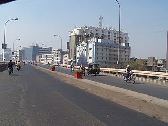

Surat ranked 9th in India with a GDP of 2.60 lakh crore in fiscal year 2016 ($40 billion in 2016). Surat GDP in 2020 will be around $57 billion estimated by The City Mayors Foundation, an international think tank on urban affairs. Surat is a major hub of diamond cutting and polishing. The first diamond workshops in Gujarat appeared in Surat and Navasari in the late 1950s. The major group working in this industry is people from the Saurashtra region of Gujarat. Because of demand in the American market from the early 1970s to the mid-1980s (with only a brief recession in 1979), Surat's diamond industry grew tremendously. Currently, most of the diamond polishing workshops are running in the Varachha area of Surat, mostly by the people of the Patel community. Around the world, 8 out of 10 diamonds on the market were cut and polished in Surat. This industry earns India about US$10 billion in annual exports. That declined by about 18% in 2019 due to reduced demand for diamonds. The decline continued in 2020 when the industry closed for some months because of the COVID-19 pandemic in India. A legacy of old Dutch trade links, it began after a Surti entrepreneur returned from East Africa bringing diamond cutters. The rough diamonds are mined in South Africa and other regions of the African continent, and go from here as smooth gems to Antwerp, Belgium where the international diamond trade is run mainly by Hasidic Jews and Jains from Palanpur in North Gujarat. Surat's economy drives from a range of manufacturing and industry fields such as diamonds, textiles, petrochemicals, shipbuilding, automobile, port etc.
Metropolitan Surat economic centers
and industries map
 Since it is known for producing textiles, including silk, Surat is known as the
textile hub of the nation or the
Silk City of India. It is very famous for its cotton mills and Surat Zari Craft. Surat is the biggest center
of
MMF (man-made fiber) in India. It has a total of 381 dyeing and printing mills and 41,100 power loom units.
There are over a hundred thousand units and mills in total. The overall annual turnover is around 5 billion
rupees. There are over 800 cloth wholesalers in Surat. It is the largest manufacturer of clothes in India,
and Surti dress material can be found in any state of India. Surat produces 9 million meters of fabric
annually,
which accounts for 60% of the total polyester cloth production in India. Now the city is focusing on
increasing
the exports of its textile.
There are many SME Domestic IT Companies present in Surat. MNC IT companies like
IBM, HCL have satellite or virtual branches in Surat. On 14 February 2014, Government of Gujarat DST had
handover STPI Surat at Bhestan-Jiav Road, Bhestan Near Udhana-Sachin BRTS Route. Surat city administration
will demand for setting up of an information technology (IT) hub and an Indian Institute of Information
Technology (IIIT) on the outskirts of the city.
Surat's Textile District Ring Road in 2007
Microsoft CityNext initiative has tied up with IT services majors Tata Consultancy Services and Wipro to leverage technology for sustainable growth of cities in India. The first smart IT city in India is being constituted by the Microsoft CityNext Initiative in Surat, Gujarat. In 2011, Surat hosted India's first Microsoft DreamSpark Yatra (a tech event) with speakers from Microsoft Headquarters at Redmond, Washington. The event was organised by Ex-Microsoft Student Partner Samarth Zankharia. In May 2015, Tech giant IBM has chosen Surat among 16 global locations for its smart cities program to help them address challenges like waste management, disaster management and citizen services. Under the program, IBM will send a team of experts to each of the chosen cities where they will spend three weeks working closely with city staff analysing data about critical issues faced by its local bodies; the co-operation continued into 2016.
Surat is being a port city, it has turned as a major commercial and industrial hub in India. It is home for many companies such as Oil and Natural Gas Corporation, Reliance Industries (Hazira Manufacturing Division), Essar Steel, Larsen & Toubro, Krishak Bharati Cooperative, NTPC Limited, Bharat Petroleum, Indian Oil Corporation, UltraTech Cement, Shell, GAIL, GSEG, Gujarat State Petroleum Corporation, Hero MotoCorp etc. Hazira Port is located in Hazira, an industrial suburb where most of the industries are located while other region is Magdalla which is also developed as Port of Magdalla.
The government of Gujarat plans another project near Surat similar to Gujarat International Finance Tec-City (GIFT). The Chief Minister has suggested that the government wishes to develop DREAM to have a five-seven star hotel, bank, IT, corporate trading house, entertainment zone and other facilities while the Surat Diamond Bourse (SDB) will be based there. Allotment of Khajod land for the project is convenient for the state government because they have 2,000 acres (810 ha) of available land. The Trade Centre, located near Sarsana village, will have a 100,160-square-metre (1,078,100 sq ft) pillar-less air-conditioned hall with a 90-by-35-metre (295 by 115 ft) pillar-less dome.
Built in 1860, Surat railway station falls under the administrative control of Western Railway zone of the Indian Railways. In early 2016, the Indian Railway Catering and Tourism Corporation rated the facility the best large station in India based on cleanliness.
The Sitilink or Surat BRTS is a bus rapid transit system in the city. Initiated by Bharat Shah, additional city engineer of Surat Municipal Corporation. It is operated by Surat Municipal Corporation and as of August 2017, had a network of 245 buses connecting major localities.
Surat International Airport located in Magdalla, 11 kilometres (7 mi) southwest of Surat. It is the 2nd busiest airport in Gujarat in terms of both aircraft movements and passenger traffic. Currently, airlines such as Air India, Alliance Air, AirAsia India, SpiceJet, IndiGo Airlines, Air Odisha, Ventura AirConnect provide flight services from the Surat to various major cities like New Delhi, Mumbai, Kolkata, Chennai, Bengaluru, Hyderabad, Goa, Jaipur, Visakhapatnam.
Surat Airport
There are also running international flights for the Sharjah route of Air India Express. Apart from the main city, Surat Airport also caters to various localities of south Gujarat including Navsari, Bardoli, Valsad, Bharuch, Ankleshwar.
Surat Metro is a under construction rapid transit rail system for the city.